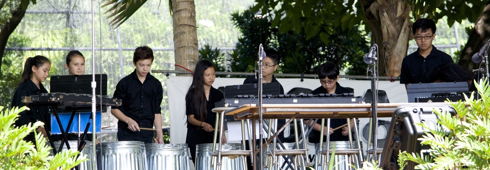

About The Ensemble
The Hawaii Youth Percussion Ensemble (HYPE) was incorporated in February 2014 and is recognized by the IRS as a 501(c)(3) nonprofit organization. We are a youth performance ensemble dedicated to working hard in the pursuit of excellence. HYPE is in the process of putting together an audition video for a performance slot at the prestigious 2015 Percussive Arts Society International Convention (PASIC) held in San Antonio, Texas. Through the dedication of our instructors and students, we are hoping to make this goal a reality.
Education is a big part of our focus within HYPE. Students engage in full percussion ensemble rehearsals, clinics with guest artists, Eurhythmics classes, private lesson instruction, and individual and small group practicing. Outreach opportunities are also being provided for our students to teach and pass on what they have learned to other student percussionists across Hawaii. Currently, HYPE has an ongoing residency with the Jarrett Middle School Band. We will also be conducting a two-day residency at Lanai High & Elementary School in January 2015.
We are very eager to expand our organization. If there is an interest to play with HYPE as a student member, present a clinic as a professional, or provide us with an opportunity to perform for an event, please contact us at hawaiiyouthpercussionensemble@gmail.com. HYPE looks forward to hearing from you!
